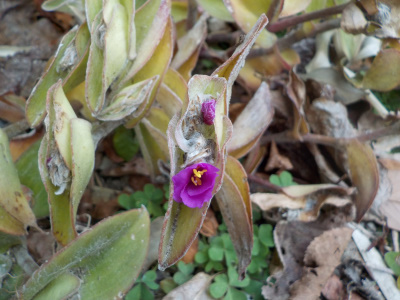
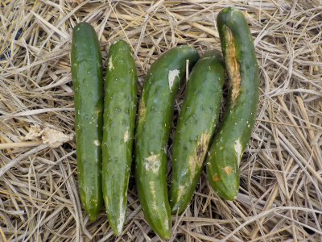
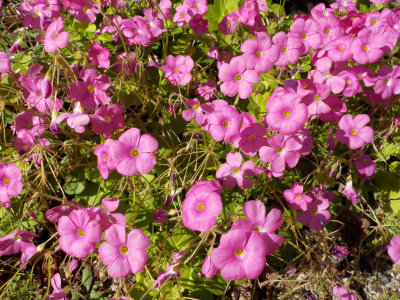

遊びで植物を育てよう
2021/11/21
トラデスカンチアの花の後はなんとなく汚い。

花と花の間の部分の白ものって何でしょうね。
ホコリが溜まっているみたいで、汚い感じがします。
ちょっと観賞に向かない。
【ページTOP】 【11月TOP】
【園芸TOP】
2021/11/21
今年最後のキュウリです。

たぶんもう大きくならないでしょう。
キュウリの表面が痛んでますね。食べれそうなことこだけカットして食べようと思います、
浅漬けかな。
【ページTOP】 【11月TOP】
【園芸TOP】
2021/11/07
カタバミが絶好調です。

カタバミが大量に開花中です。
派手でいいですね。
【ページTOP】 【11月TOP】
【園芸TOP】
過去の日記
【2020年11月の日記】
【2019年11月の日記】
【2018年11月の日記】
【2017年11月の日記】
【2016年11月の日記】
【2015年11月の日記】
【2014年11月の日記】
【2013年11月の日記】
【2012年11月の日記】
【ページTOP】
【11月TOP】
【園芸TOP】
畑仕事じゃないよ。
【おいしいものを食べよう。】【しっかり寝よう。】
【ソロ活をしよう!】【季節感のあることをしよう。】【動画視聴はほどほどに。】【当サイトの全てのコンテンツは無断転載禁止です。】